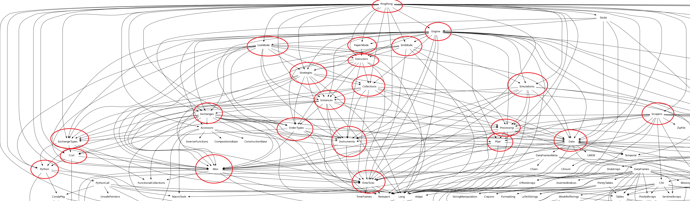

Precompilations
Functions that should be precompiled
- Python:
clearpath! - Data:
ZarrInstance,ZGroup,zopen,get_zgroup - Misc:
empty!(::Config) - CPython
__init__(?)
Precompilation can be skipped for some modules, by setting JULIA_NOPRECOMP env var:
ENV["JULIA_NOPRECOMP"] = (:PingPong, :Scrapers, :Engine, :Watchers, :Plotting, :Stats)or use direnv, (see the .envrc in the repository). Setting JULIA_NOPRECOMP=all disables precompilation entirely for some packages, it should be used only when modifying low level pieces of the modules stack. When switching between all, and custom lists remember to purge the compile cache:
include("resolve.jl")
purge_compilecache() # If you pass a local package name it will only purge that package comp cacheMethods invalidations
The sequence of using ... statements to load modules can be important to consider, although only for the first instance for a particular module is critical. That's because when a module is loaded, methods insertion can trigger invalidation. If you order the modules loading from the most likley to invalidate, to the least one, less methods will be invalidated and the top module will load faster. For example in case of modules that depend on the Python, making python the top most statemenet can improve loading times, e.g.:
# load invalidation heavy modules first
using Python
using Ccxt
# load lightweight modules later
using Timeticks
using LangInvalidation heavy modules list:
- Python
- Ccxt (starts the python async loop)
- Data (depends on Zarr and DataFrames)
- Plots (makie dependency)
In general if one of our local package depends on some heavy package, the chances that it will trigger many methods invalidations is high. This is also why it is important to always add an external module to 1 and only 1 local package and use the local package as dependency to other local packages, e.g.:
We choose to make DataFrames a dependency to the local package Data, but we want to use the DataFrames module from our Stats package. We should not add DataFrames the deps of Stats, instead we Data and import DataFrames from Data like so:
module Stats
using Data.DataFrames
# ...
endAdding dependencies
Only add a dependency to one of the subpackages, when using the same dependency from another subpackage, add the subpackage that already has that dependency instead of the dependency itself.
When adding using or imports statements inside packages you must consider their order. The rule of thumb is to always import from the most downstream package to the most upstream. This reduces the amount of invalidations happening as packages are inserted into the method tables.
Customizations and the type hierarchy
If you look at the package OrderTypes (or EventTypes) there are multiple definition for dispatching functions on orders whether they are buy,sell,long,short. Care must be taken for ensuring that dispatching works as intended because multiple definitions that might trick you into thinking they are similar, they are not:
struct One{T} end
struct Two{T} end
TypeAlias1{A} = Two{<:One}
TypeAlias2{A<:One} = Two{A}If you parametrize on the alias, the type deref won't carry over the parameter restriction, so if you have another type TypeAlias3{A<:Two} = Two{A} it will dispatch to the same func as TypeAlias2 ignoring the <:One and <:Two restriction. As a rule of thumb, restrict subtyping to the right side to ensure dispatching works as intended.
Revise can trick you into thinking dispatching is working correctly while in practice you might have just redefined a new method on the same parameters, more over, because revise doesn't delete old method if still in use, it might look like dispatching is working, whereas some parts are using deleted methods that are not anymore in the code base. For this reason, when you notice inconsistencies, start from a fresh repl, and optionally purge the compile cache.
Dependency graph
This shows a graph where the red circled packages are our own packages. 
{kind=link}
{kind=link}
{kind=link}